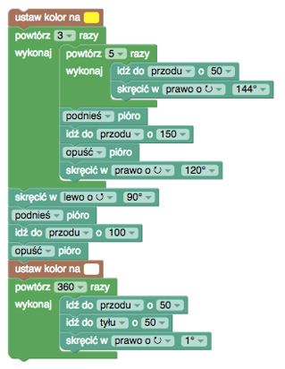

Gry Blockly - Żółw
Link do gry: https://blockly.games/turtle?lang=pl
Zadanie 1
- Narysowanie jednego boku to krok naprzód z długością 100.
- Po narysowaniu jednego boku musimy się ustawić, by narysować następny - skręcamy w prawo o 90 stopni.
- Kwadrat ma cztery boki, a narysowanie każdego to krok naprzód i obrót w prawo - używamy więc pętli.
Zadanie 2
- Zasada taka sama jak przy kwadracie, tylko teraz mamy pięć boków.
- Jaki powinien być kąt obrotu żółwia? Warto poeksperymentować i zobaczyć, jak żółw rzeczywiście skręca.
Zadanie 3
- Zmieniamy kolor – wystarczy to zrobić raz, więc instrukcję ustawiamy przed pętlą.
- Gwiazda ma pięć ramion – pięć linii – pięć powtórzeń pętli.
- Po każdej linii skręcamy w prawo – warto poeksperymentować z różnymi wartościami kąta.
Zadanie 4
- Program składa się z dwóch części – narysowania gwiazdki i narysowania linii.
- Gwiazdkę rysujemy tak samo, tylko z krótszą długością – gwiazdka jest mniejsza.
- Zauważmy, jak ustawia się żółw po narysowaniu gwiazdki – skierowany jest wprost na linię.
- Podnosimy pisak, robimy duży krok, opuszczamy pisak i robimy mały krok.
Zadanie 5
- Idea jest prosta – łączymy rysowanie "niewidzialnego" kwadratu z rysowaniem gwiazdek.
- Zaczynamy od narysowania gwiazdki.
- Potem podnosimy pisak, "rysujemy" bok kwadratu i obracamy się w prawo.
- Opuszczamy pisak i powtarzamy.
Zadanie 6
- Podobnie jak wcześniej – tym razem zamiast kwadratu - trójkąt.
- Zmieniamy ilość boków (pętla) i kąt obrotu.
- Zwróćmy uwagę, gdzie i w jakiej pozycji znajduje się żółw po narysowaniu wszystkich gwiazdek.
- Musimy go odpowiednio ustawić i zrobić dwa kroki naprzód „niewidzialny” i „widzialny”, zmieniając przy tym kolor.
Fragment rysujący białą linię.
Zadanie 7
- Rysowanie gwiazdek – bez zmian.
- Na końcu, zamiast rysować jedną kreskę, rysujemy cztery.
- Zwróćmy uwagę na to, co musi zrobić żółw po narysowaniu pierwszej kreski.
- Musi ponownie znaleźć się na jej początku, by móc narysować kolejną.
- Cofamy się więc, obracamy, rysujemy kolejną i powtarzamy.
Fragment rysujący biały wachlarz.
Zadanie 8

- Rysowanie gwiazdek – bez zmian.
- Koło? – to tylko 360 linii z bardzo małym obrotem.
- Jak to dobrze, że mamy pętlę.
Fragment rysujący białe koło.
Zadanie 9
- Półksiężyc – dwa koła, najpierw białe, potem czarne.
- Koła są względem siebie przesunięte.
- Przed narysowaniem czarnego koła, musimy żółwia odpowiednio przemieścić.
- Jak dokładnie? Eksperymentujemy!
Fragment rysujący czarne koło.